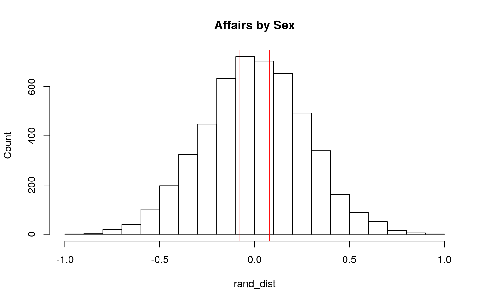
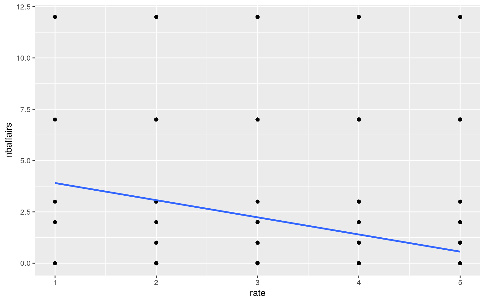
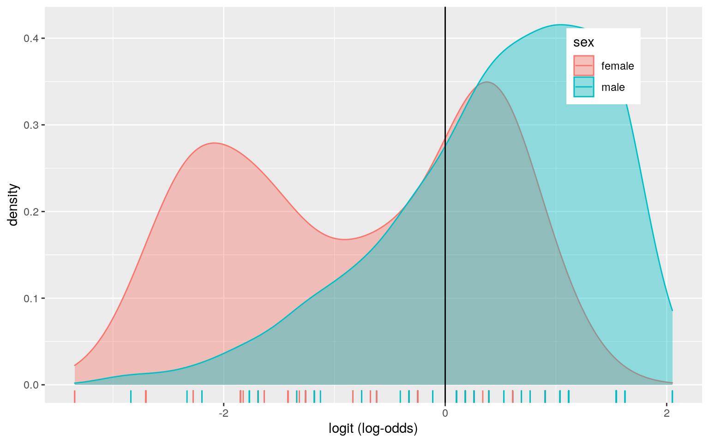
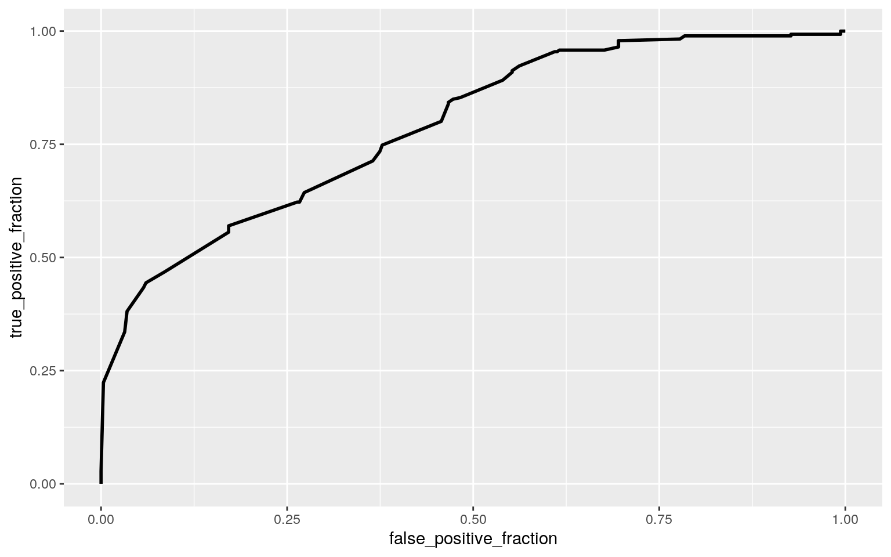

Introduce your dataset and each of your variables (or just your main variables if you have lots) in a paragraph. What are they measuring? How many observations?
The dataset I have chosen contains 9 variables and 601 observations for data on extramarital affairs. These varibales include sex, age, number of years married, whether they have children, religiosity, level of education, occupation (according to Hollingshead’s classification), self rating on the happiness of their marriage, and number of estramarital “encounters” during the past year with each observation being a single individual. The children variable is a binomial variable where 1 is having one or more children and 0 is having no children. The religiosity is a categorical variable in a 1-5 scale where 1 is antireligous, 2 is not religous, 3 is slightly, 4 is somewhat, and 5 is very religious. Level of education is also a categorical variable where 9 is grad school, 12 is high school graduate, 14 is some college, 17 is some graduate work, 18 is master’s degree, and 20 is some advanced degree such as a PhD. or M.D. Occupation is a categorical variable where 1 is student, 2 is semiskilled or unskilled worker (farming, agriculture), 3 is white caollar (sales, clerical), 4 is skilled worker (teacher, nurse), 5 is managerial or administrative, 6 is professsional with advanced degree, and 7 is not specified but presumably above professional with advanced degree. Rate is a categorical variable on the self rated marriage happiness where 1 is very unhappy, 2 is somewhat unhappy, 3 is average, 4 is happier than average, and 5 is very happy. Age, years maried, and number of extramarital encounters are all numeric variables.
Perform a MANOVA testing whether any of your numeric variables (or a subset of them, if including them all is unreasonable or doesn’t make sense) show a mean difference across levels of one of your categorical variables (3). If they do, perform univariate ANOVAs to find response(s) showing a mean difference across groups (3), and perform post-hoc t tests to find which groups differ (3). Discuss the number of tests you have performed, calculate the probability of at least one type I error (if unadjusted), and adjust the significance level accordingly (bonferroni correction) before discussing significant differences (3). Briefly discuss some of the MANOVA assumptions and whether or not they are likely to have been met here (no need for anything too in-depth) (2).
library(Ecdat)
library(rstatix)
group <- Fair$rate
DVs <- Fair %>% select(age,ym,nbaffairs)
sapply(split(DVs,group), mshapiro_test)## 1 2 3 4 5
## statistic 0.8157357 0.9404414 0.8793537 0.8593932
0.7538445
## p.value 0.004440847 0.003341039 3.796449e-07
2.093012e-12 2.499586e-18man1<-manova(cbind(age,ym,nbaffairs)~rate, data=Fair)
summary(man1)## Df Pillai approx F num Df den Df Pr(>F)
## rate 1 0.11713 26.401 3 597 4.791e-16 ***
## Residuals 599
## ---
## Signif. codes: 0 '***' 0.001 '**' 0.01 '*' 0.05 '.' 0.1
' ' 1summary.aov(man1)## Response age :
## Df Sum Sq Mean Sq F value Pr(>F)
## rate 1 2050 2050.1 24.699 8.759e-07 ***
## Residuals 599 49719 83.0
## ---
## Signif. codes: 0 '***' 0.001 '**' 0.01 '*' 0.05 '.' 0.1
' ' 1
##
## Response ym :
## Df Sum Sq Mean Sq F value Pr(>F)
## rate 1 1100.8 1100.78 37.629 1.555e-09 ***
## Residuals 599 17522.9 29.25
## ---
## Signif. codes: 0 '***' 0.001 '**' 0.01 '*' 0.05 '.' 0.1
' ' 1
##
## Response nbaffairs :
## Df Sum Sq Mean Sq F value Pr(>F)
## rate 1 510.1 510.10 50.764 3.002e-12 ***
## Residuals 599 6019.0 10.05
## ---
## Signif. codes: 0 '***' 0.001 '**' 0.01 '*' 0.05 '.' 0.1
' ' 1pairwise.t.test(Fair$age, Fair$rate, p.adj = "none")##
## Pairwise comparisons using t tests with pooled SD
##
## data: Fair$age and Fair$rate
##
## 1 2 3 4
## 2 0.17261 - - -
## 3 0.02335 0.14512 - -
## 4 0.03811 0.26177 0.55367 -
## 5 0.00037 0.00010 0.01174 8.5e-05
##
## P value adjustment method: nonepairwise.t.test(Fair$ym, Fair$rate, p.adj = "none")##
## Pairwise comparisons using t tests with pooled SD
##
## data: Fair$ym and Fair$rate
##
## 1 2 3 4
## 2 0.07898 - - -
## 3 0.00692 0.13146 - -
## 4 0.00993 0.20095 0.63070 -
## 5 1.1e-05 3.3e-06 0.00085 1.5e-06
##
## P value adjustment method: nonepairwise.t.test(Fair$nbaffairs, Fair$rate, p.adj = "none")##
## Pairwise comparisons using t tests with pooled SD
##
## data: Fair$nbaffairs and Fair$rate
##
## 1 2 3 4
## 2 0.95524 - - -
## 3 0.00425 1.1e-06 - -
## 4 0.00181 9.0e-09 0.76093 -
## 5 0.00012 9.3e-13 0.06644 0.05469
##
## P value adjustment method: none1-.95^7## [1] 0.3016627.05/7## [1] 0.007142857I conducted 1 MANOVA, 3 univariate ANOVAs, and 3 post hoc t tests for a total of 7 tests. The probability of at least 1 type 1 error with 7 tests is 0.3017. After adjusting the significance level for the 7 tests using the bonferroni correction, with an adjusted significance level of 0.0071, they still show significant differences. The MANOVA assumptions were not met because the multivariate normality assumption failed the shapiro test.
Perform some kind of randomization test on your data (that makes sense). The statistic can be anything you want (mean difference, correlation, F-statistic/ANOVA, chi-squared), etc. State null and alternative hypotheses, perform the test, and interpret the results (7). Create a plot visualizing the null distribution and the test statistic (3).
Fair %>% group_by(sex) %>% summarize(means=mean(nbaffairs)) %>% summarize(`mean_diff:`=diff(means))## # A tibble: 1 x 1
## `mean_diff:`
## <dbl>
## 1 0.0775rand_dist<-vector()
for(i in 1:5000){new<-data.frame(nbaffairs=sample(Fair$nbaffairs),sex=Fair$sex)
rand_dist[i]<-mean(new[new$sex=="male",]$nbaffairs)-
mean(new[new$sex=="female",]$nbaffairs)}
{hist(rand_dist,main="Affairs by Sex",ylab="Count"); abline(v = c(-0.07746, 0.07746),col="red")}
mean(rand_dist>0.07746 | rand_dist < -0.07746)## [1] 0.7764A mean difference test was run to determine if there was a difference in number of extramarital encounters in the past year between the sexes. The null hypothesis is there is no difference between the sexes. The alternative hypothesis is the true difference in means is not equal to 0. The pvalue is 0.7752 which means we fail to reject the null hypothesis, meaning we can reasonably assume there is no mean difference in extramarital encounters between the two sexes in the past year.
Build a linear regression model predicting one of your response variables from at least 2 other variables, including their interaction. Mean-center any numeric variables involved in the interaction.
- Interpret the coefficient estimates (do not discuss significance) (10)
- Plot the regression using `ggplot()` using geom_smooth(method="lm"). If your interaction is numeric by numeric, refer to code in the slides to make the plot or check out the `interactions` package, which makes this easier. If you have 3 or more predictors, just chose two of them to plot for convenience. (10)
- What proportion of the variation in the outcome does your model explain? (4)
- Check assumptions of linearity, normality, and homoskedasticity either graphically or using a hypothesis test (5)
- Regardless, recompute regression results with robust standard errors via `coeftest(..., vcov=vcovHC(...))`. Discuss significance of results, including any changes from before/after robust SEs if applicable. (10)fit3<-lm(nbaffairs~rate, data= Fair)
summary(fit3)##
## Call:
## lm(formula = nbaffairs ~ rate, data = Fair)
##
## Residuals:
## Min 1Q Median 3Q Max
## -3.9063 -1.3989 -0.5631 -0.5631 11.4369
##
## Coefficients:
## Estimate Std. Error t value Pr(>|t|)
## (Intercept) 4.7421 0.4790 9.900 <2e-16 ***
## rate -0.8358 0.1173 -7.125 3e-12 ***
## ---
## Signif. codes: 0 '***' 0.001 '**' 0.01 '*' 0.05 '.' 0.1
' ' 1
##
## Residual standard error: 3.17 on 599 degrees of freedom
## Multiple R-squared: 0.07813, Adjusted R-squared: 0.07659
## F-statistic: 50.76 on 1 and 599 DF, p-value: 3.002e-12Fair%>%ggplot(aes(rate,nbaffairs))+geom_point()+geom_smooth(method = 'lm',se=F)
fit3.1<-lm(nbaffairs~religious, data= Fair)
summary(fit3.1)##
## Call:
## lm(formula = nbaffairs ~ religious, data = Fair)
##
## Residuals:
## Min 1Q Median 3Q Max
## -2.3200 -1.9117 -1.0952 -0.6869 11.3131
##
## Coefficients:
## Estimate Std. Error t value Pr(>|t|)
## (Intercept) 2.7283 0.3801 7.177 2.11e-12 ***
## religious -0.4083 0.1142 -3.574 0.00038 ***
## ---
## Signif. codes: 0 '***' 0.001 '**' 0.01 '*' 0.05 '.' 0.1
' ' 1
##
## Residual standard error: 3.267 on 599 degrees of freedom
## Multiple R-squared: 0.02088, Adjusted R-squared: 0.01925
## F-statistic: 12.77 on 1 and 599 DF, p-value: 0.0003797Fair$rate_c <- Fair$rate - mean(Fair$rate)
Fair$religious_c <- Fair$religious - mean(Fair$religious)
fit3.2<-lm(nbaffairs ~ rate_c * religious_c, data=Fair)
summary(fit3.2)##
## Call:
## lm(formula = nbaffairs ~ rate_c * religious_c, data =
Fair)
##
## Residuals:
## Min 1Q Median 3Q Max
## -4.3509 -1.6729 -0.9950 -0.2408 11.7592
##
## Coefficients:
## Estimate Std. Error t value Pr(>|t|)
## (Intercept) 1.45552 0.12822 11.352 < 2e-16 ***
## rate_c -0.82529 0.11640 -7.090 3.8e-12 ***
## religious_c -0.39021 0.11015 -3.542 0.000428 ***
## rate_c:religious_c 0.01227 0.10176 0.121 0.904066
## ---
## Signif. codes: 0 '***' 0.001 '**' 0.01 '*' 0.05 '.' 0.1
' ' 1
##
## Residual standard error: 3.142 on 597 degrees of freedom
## Multiple R-squared: 0.09712, Adjusted R-squared: 0.09259
## F-statistic: 21.41 on 3 and 597 DF, p-value: 3.513e-13resids<-fit3.2$residuals
shapiro.test(resids)##
## Shapiro-Wilk normality test
##
## data: resids
## W = 0.72335, p-value < 2.2e-16library(sandwich)
library(lmtest)
bptest(fit3.2)##
## studentized Breusch-Pagan test
##
## data: fit3.2
## BP = 43.958, df = 3, p-value = 1.541e-09summary(fit3.2)$coef[,1:3]## Estimate Std. Error t value
## (Intercept) 1.45552350 0.1282180 11.3519407
## rate_c -0.82528831 0.1163972 -7.0902755
## religious_c -0.39020720 0.1101548 -3.5423528
## rate_c:religious_c 0.01227029 0.1017621 0.1205781coeftest(fit3.2, vcov = vcovHC(fit3.2))[,1:3]## Estimate Std. Error t value
## (Intercept) 1.45552350 0.1292823 11.25848637
## rate_c -0.82528831 0.1526022 -5.40810159
## religious_c -0.39020720 0.1165885 -3.34687687
## rate_c:religious_c 0.01227029 0.1407939 0.08715068Slope for marriage rating is significantly associated with extramarital encounters for an average religiosity: for every 1 unit increase in marriage rating, predicted number of extramarital encounters decreases by 0.8253 units. SLope for religiosity is significantly associated with extramarital encounters for an average marriage rating: for every 1 unit increase in religiosity, predicted number of extramarital encounters decreases by 0.3902 units. Slope for religiosity on extramarital encounters for average marriage rating is 0.0123 and is not significant. The model explains 9.712%, so 9.712% of variability in number of extramarital encounters were accounted for with marriage rating and religiosity. Normally distributed residuals was tested with the Shapiro-Wilk test and homoskedasticity was tested with the Breush-Pagan test, both of which failed the assumptions. After correcting for robust standard errors, it resulted in a larger standard error for all variables. A larger standard error will result in a smaller T statistic and hence a larger p value. A larger p value means there is less of a chance to reject the null hypothesis.
Rerun same regression model (with the interaction), but this time compute bootstrapped standard errors (either by resampling observations or residuals). Discuss any changes you observe in SEs and p-values using these SEs compared to the original SEs and the robust SEs)
boot_dat<- sample_frac(Fair, replace=T)
samp_distn<-replicate(5000, {
boot_dat <- sample_frac(Fair, replace=T)
fit4 <- lm(nbaffairs ~ rate * religious, data=boot_dat)
coef(fit4)
})
samp_distn %>% t %>% as.data.frame %>% summarize_all(sd)## (Intercept) rate religious rate:religious
## 1 1.982624 0.4590433 0.6021128 0.1386285The bootstrapped standard errors were larger with each variable compared to the original and robust SE except for the self rated marriage happiness. For this variable, the bootstrapped SE was smaller than both robust SE and the original SE. The variables that had larger SEs (intercept, religious, and the interaction) created larger p values than in the original and robust SEs meaning there is less of a chance to reject the null hypothesis.
Fit a logistic regression model predicting a binary variable (if you don’t have one, make/get one) from at least two explanatory variables (interaction not necessary).
- Interpret coefficient estimates in context (10)
- Report a confusion matrix for your logistic regression (5)
- Compute and discuss the Accuracy, Sensitivity (TPR), Specificity (TNR), Precision (PPV), and AUC of your model (5)
- Using ggplot, make a density plot of the log-odds (logit) colored/grouped by your binary outcome variable (5)
- Generate an ROC curve (plot) and calculate AUC (either manually or with a package); interpret (5)Fair1<-Fair%>%mutate(y=ifelse(sex=="male",1,0))
fit5<-glm(y~education+occupation, family="binomial", data=Fair1)
coeftest(fit5)##
## z test of coefficients:
##
## Estimate Std. Error z value Pr(>|z|)
## (Intercept) -5.779017 0.727850 -7.9398 2.024e-15 ***
## education 0.214007 0.048302 4.4306 9.399e-06 ***
## occupation 0.507179 0.069526 7.2948 2.991e-13 ***
## ---
## Signif. codes: 0 '***' 0.001 '**' 0.01 '*' 0.05 '.' 0.1
' ' 1exp(coeftest(fit5))##
## z test of coefficients:
##
## Estimate Std. Error z value Pr(>|z|)
## (Intercept) 0.0030918 2.0706243 0.0004 1
## education 1.2386308 1.0494880 83.9779 1
## occupation 1.6605994 1.0719998 1472.6451 1Fair1 <- Fair1%>%mutate(prob=predict(fit5, type= "response"), prediction=ifelse(prob>.5,1,0))
table(predict=as.numeric(Fair1$prob>.5),truth=Fair1$y)%>%addmargins## truth
## predict 0 1 Sum
## 0 197 76 273
## 1 118 210 328
## Sum 315 286 601#Accuracy
(197+210)/601## [1] 0.6772047#TPR
210/286## [1] 0.7342657#TNR
197/315## [1] 0.6253968#PPV
210/328## [1] 0.6402439Fair1$logit<-predict(fit5,type="link")
Fair1%>%ggplot()+geom_density(aes(logit,color=sex,fill=sex), alpha=.4)+
theme(legend.position=c(.85,.85))+geom_vline(xintercept=0)+xlab("logit (log-odds)")+
geom_rug(aes(logit,color=sex))
library(plotROC)
classify<-Fair1%>%transmute(prob,prediction,truth=y)
ROCplot<-ggplot(classify)+geom_roc(aes(d=truth,m=prob), n.cuts=0)
ROCplot
calc_auc(ROCplot)## PANEL group AUC
## 1 1 -1 0.7888112Controlling for education, every 1 unit increase in occupation, odds of predicted male increase by a factor of 1.661. Controlling for occupation, every 1 unit increase in education, odds of predicted male increase by a factor of 1.239. The proportion of correctly identifying sex based on occupation and education was 67.7%. The proportion of correctly identified males (TPR) and females (TNR) was 73.4% and 62.5%, respectively. The precision on correctly predicted males who acutally were was 64.0%. The calculated AUC was 0.789 which is decent indicating our model was fair at predicting male or female based on their occupation and education.
Perform a logistic regression predicting the same binary response variable from ALL of the rest of your variables (the more, the better!)
- Fit model, compute in-sample classification diagnostics (Accuracy, Sensitivity, Specificity, Precision, AUC), and interpret (5)
- Perform 10-fold (or repeated random sub-sampling) CV with the same model and report average out-of-sample classification diagnostics (Accuracy, Sensitivity, Specificity, Precision, and AUC); interpret AUC and compare with the in-sample metrics (10)
- Perform LASSO on the same model/variables. Choose lambda to give the simplest model whose accuracy is near that of the best (i.e., `lambda.1se`). Discuss which variables are retained. (5)
- Perform 10-fold CV using only the variables lasso selected: compare model's out-of-sample AUC to that of your logistic regressions above (5)Fair2<-Fair1 %>%mutate(y = ifelse(sex == "male",1,0))
fit6<-glm(y~age+ym+child+religious+education+occupation+rate+nbaffairs, data=Fair2, family="binomial")
prob6<-predict(fit6,type="response")
class_diag(prob6,Fair2$y)## acc sens spec ppv auc
## 1 0.7287854 0.7307692 0.7269841 0.7084746 0.8120491set.seed(1234)
k=10
data<-Fair2[sample(nrow(Fair2)),] #randomly order rows
folds<-cut(seq(1:nrow(Fair2)),breaks=k,labels=F) #create 10 folds
diags<-NULL
for(i in 1:k){
train<-data[folds!=i,]
test<-data[folds==i,]
truth<-test$y
fit6<-glm(y~age+ym+child+religious+education+occupation+rate+nbaffairs,data=train,family="binomial")
probs6.1<-predict(fit6,newdata = test,type="response")
diags<-rbind(diags,class_diag(probs6.1,truth))
}
summarize_all(diags,mean)## acc sens spec ppv auc
## 1 0.7286885 0.7317948 0.7273899 0.7106799 0.8029119library(glmnet)
y1<-as.matrix(Fair2$y)
x<-model.matrix(y~age+ym+child+religious+education+occupation+rate+nbaffairs,data=Fair2)[,-1]
cv<-cv.glmnet(x,y1,family="binomial")
lasso<-glmnet(x,y1,family="binomial",lambda=cv$lambda.1se)
coef(lasso)## 9 x 1 sparse Matrix of class "dgCMatrix"
## s0
## (Intercept) -5.45551988
## age 0.02240131
## ym -0.01972130
## childyes 0.22254433
## religious .
## education 0.16906307
## occupation 0.43843280
## rate .
## nbaffairs .fit6.2<-glm(y~age+ym+child+education+occupation, data=Fair2, family="binomial")
set.seed(1234)
k=10
data <- Fair2 %>% sample_frac #put rows of dataset in random order
folds <- ntile(1:nrow(Fair2),n=10) #create fold labels
diags<-NULL
for(i in 1:k){
train <- data[folds!=i,]
test <- data[folds==i,]
truth <- test$y
fit <- glm(y~age+ym+child+education+occupation,data=train, family="binomial")
probs6.2 <- predict(fit6.2, newdata=test, type="response")
diags<-rbind(diags,class_diag(probs6.2,truth))
}
diags%>%summarize_all(mean)## acc sens spec ppv auc
## 1 0.7336885 0.7448735 0.7235971 0.7102552 0.8083594All of the classification diagnostics, including the AUC, for all of the explanatory variables was more predictive than the previous model that only had two explanatory variables. The AUC increased from 0.789 to 0.812 giving a “good” model for the predictability of sex. Performing an out of sample 10 fold CV on the model gives a slightly worse AUC than the in sample metric but not enough to indicate overfitting (<0.01 difference). After performing a LASSO on the model, the variables age, ym, child, education, and occupation were retained meaning they were the most predictive variables. Performing a 10 fold CV on the significant varibales did yield a better out of sample AUC than the previous logistic regression at 0.808 as compared to 0.803. However, the difference is small because there was no overfitting in the out of sample model.